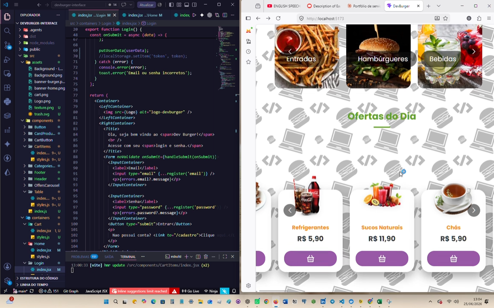
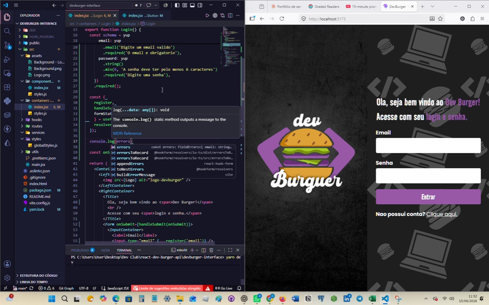
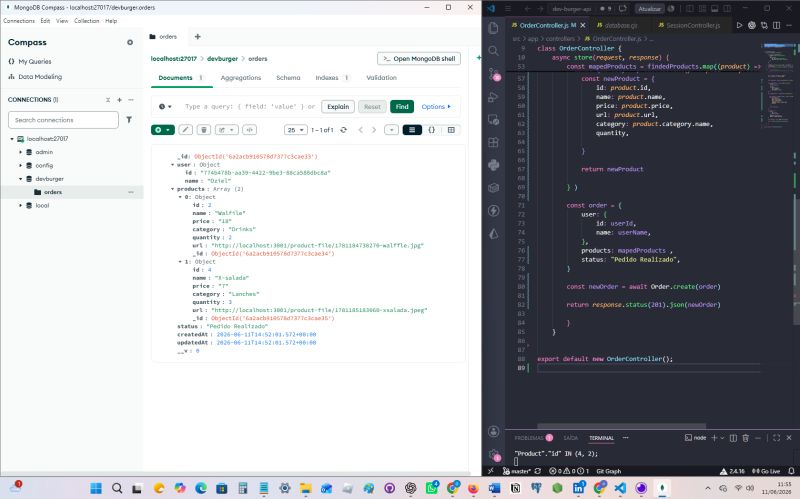

Frontend
React, JavaScript, HTML, CSS, componentes reutilizáveis e interfaces responsivas.
Desenvolvedor Full Stack em formação
Crio interfaces web e APIs com atenção à experiência do usuário, organização do código e integração entre frontend, backend e banco de dados.
Sobre
Tenho estudado e desenvolvido projetos com JavaScript, React, Node.js e MongoDB, conectando telas, rotas, autenticação, validação de formulários e persistência de dados.
Meu foco é evoluir como desenvolvedor full stack, construindo soluções funcionais, bem estruturadas e prontas para crescer conforme a necessidade do produto. Atualmente curso Engenharia de Software, unindo a base acadêmica à prática em projetos reais.
Trajetória
Antes da transição para desenvolvimento, atuei por mais de 15 anos em supervisão de operações elétricas de alta tensão, liderando equipes em ambientes críticos que exigem precisão, disciplina e resolução de problemas sob pressão.
Essa experiência se traduz hoje em maturidade para lidar com prazos, comunicação clara em equipe e responsabilidade técnica — competências que aplico no dia a dia do desenvolvimento de software.
Competências
React, JavaScript, HTML, CSS, componentes reutilizáveis e interfaces responsivas.
Node.js, APIs REST, controllers, services, validação de dados e regras de negócio.
MongoDB, modelagem de documentos, integração com backend e consultas no Compass.
Git, GitHub, VS Code, npm, Vite, organização de pastas e depuração em ambiente local.
Projeto em destaque
Aplicação web de e-commerce para cardápio e pedidos, com interface em React, autenticação, carrinho persistente, categorias de produtos e checkout com pagamento real via Stripe.

Frontend · E-commerce
Fluxo de compra ponta a ponta: carrinho com Context API e persistência em localStorage, cálculo dinâmico de totais e checkout integrado ao Stripe (Payment Element) para processar pagamentos de forma segura.
Ver código no GitHub →
Arquitetura
Autenticação com validação via React Hook Form + Yup, sessão persistida em localStorage e contextos globais (usuário e carrinho) compartilhados entre rotas, com header dinâmico exibindo nome do usuário e atalho para o carrinho.
Ver código no GitHub →
Backend
Registro de pedidos no MongoDB, controller de criação e estrutura para relacionar usuário, produtos e status do pedido.
Ver código no GitHub →API REST
API para gerenciamento de usuários e tarefas com Node.js, Express e Prisma ORM, persistindo dados no MongoDB com foco em manutenibilidade e tratamento de erros.
Ver código no GitHub →Formação
Estácio - SP
DevClub, 2026

Certificado emitido em 15/05/2026.

Certificado emitido em 10/05/2026.
Contato
Disponível para oportunidades em desenvolvimento web, colaboração em projetos e evolução de aplicações com JavaScript, React e Node.js.